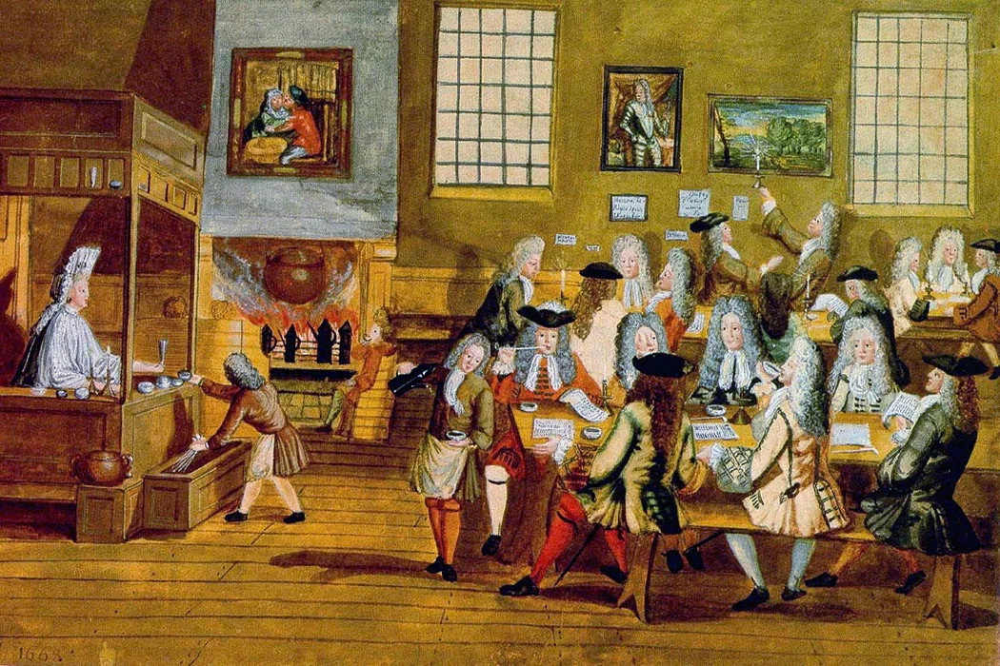

Introduction
The 17th and 18th centuries witnessed a transformative period in the history of the British Empire, marked by a concerted effort to legitimize and consolidate power. Great Britain, emerging from the turbulent political and social landscape of the preceding centuries, strategically employed a multifaceted approach encompassing political, economic, and cultural dimensions. This era witnessed the rise of a robust imperial power as Great Britain navigated through internal conflicts, external threats, and geopolitical challenges. This exploration delves into the nuanced strategies and pivotal events that contributed to the legitimization and consolidation of British power during the 17th and 18th centuries, illuminating the intricate tapestry of the British Empire's historical evolution.
1. Political Strategies:
One of the cornerstone political strategies employed by Great Britain during this period was the establishment of a constitutional monarchy. The Glorious Revolution of 1688 marked a pivotal moment when William of Orange and Mary Stuart ascended to the throne, ushering in a constitutional framework that limited the powers of the monarchy and laid the groundwork for parliamentary sovereignty. This shift towards constitutionalism not only diffused political power but also provided a stable foundation for the burgeoning British Empire. The Act of Union in 1707, which united England and Scotland, further strengthened the political unity of the realm, creating a more centralized authority capable of asserting control over its overseas territories.
2. Economic Expansion:
Economically, Great Britain implemented a mercantilist agenda aimed at maximizing the economic benefits derived from its colonies. The Navigation Acts, initiated in the 17th century, epitomized this approach by restricting colonial trade to British vessels and promoting the export of raw materials to the mother country. The establishment of overseas trading posts, exemplified by the East India Company, facilitated the accumulation of wealth and resources. The economic success of these ventures not only fueled the imperial machinery but also contributed to the economic prosperity that would later underpin Britain's global dominance during the Industrial Revolution.
3. Cultural Hegemony:
Cultural strategies played a crucial role in legitimizing British imperial rule. The spread of English language, legal systems, and cultural norms served as a soft power tool, creating a sense of unity among diverse colonies. The Anglicization of the colonial elite further solidified loyalty to the British Crown, as the adoption of British customs and education became a marker of social status. The propagation of British values through institutions such as churches and schools helped forge a cultural connection that transcended geographical boundaries, fostering a sense of shared identity and allegiance to the imperial project.
Conclusion
In conclusion, the 17th and 18th centuries stand as a watershed moment in the consolidation and legitimization of British power within the vast expanse of the British Empire. Political, economic, and cultural strategies converged to establish a robust imperial framework, allowing Great Britain to navigate the challenges of the time and emerge as a global power. The constitutional reforms, economic policies, and cultural initiatives undertaken during this period laid the foundation for the subsequent expansion and endurance of the British Empire. As we unravel the intricate threads of history, it becomes evident that the consolidation of power during the 17th and 18th centuries not only shaped the destiny of the British Empire but also left an indelible mark on the course of world history.